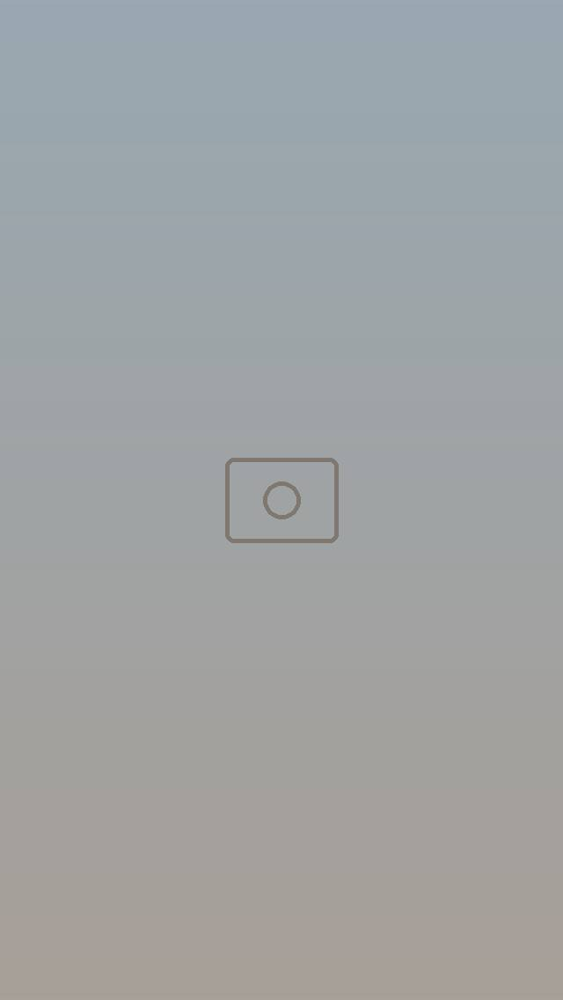
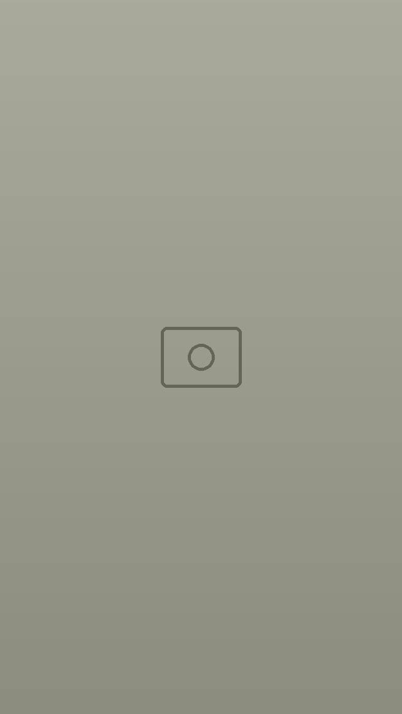
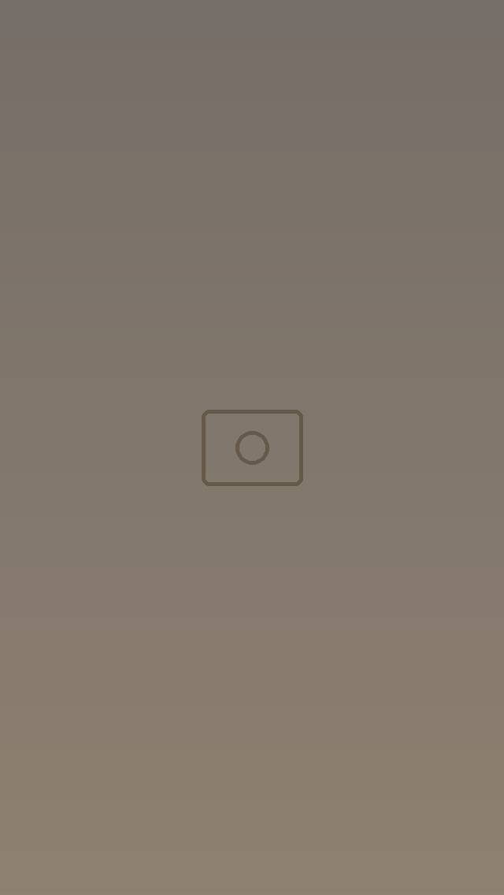
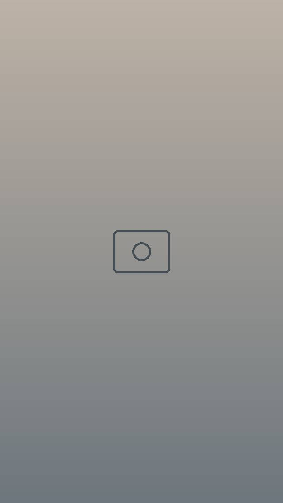
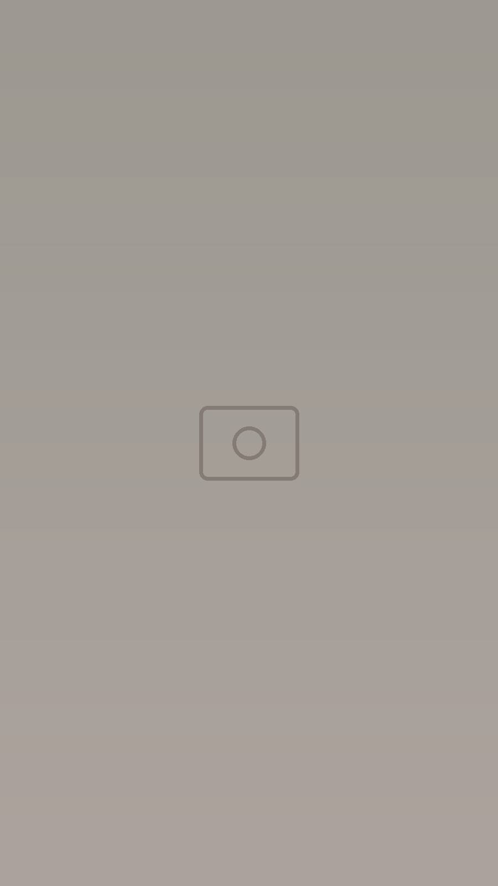
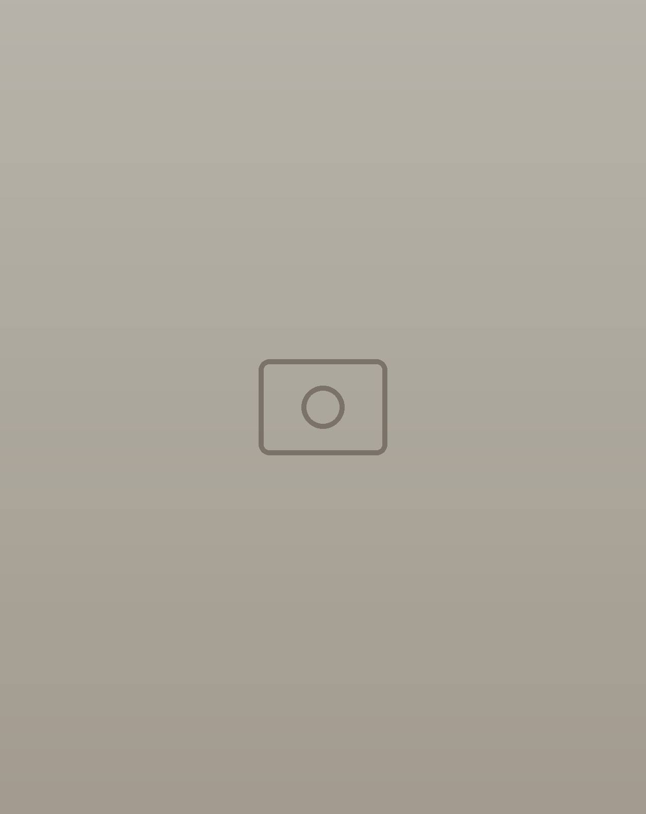
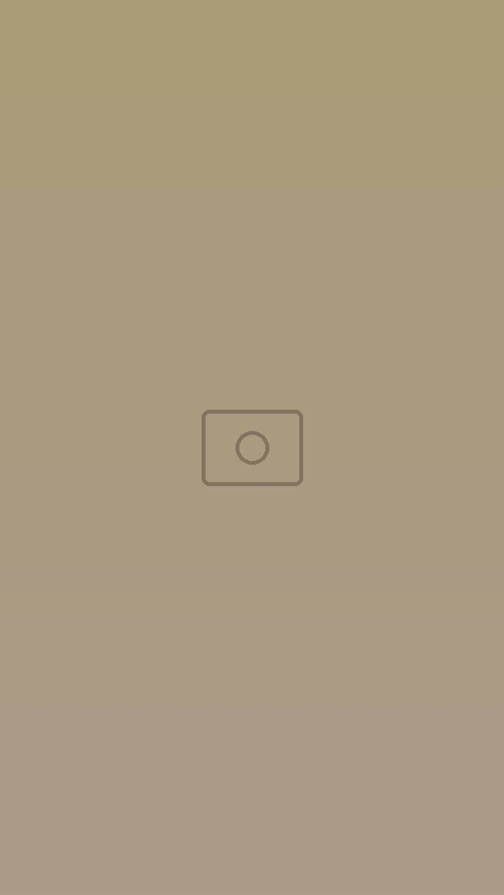

Café · Restaurant
L’Amarre
Tabarka, la mer en toile de fond.
Terrasse face à la mer, au port de plaisance de Tabarka.
جيعان؟ ⚓ L’Amarre يستنّاك.
- Port de plaisance de Tabarka
- Terrasse face à la mer
- Fruits de mer & feu de bois
- Petit-déjeuner & brunch


Le lieu
Entre café et restaurant
Un lieu familial où l’on prend le temps. Accueil chaleureux, assiettes copieuses et terrasse les pieds dans le port.
Le matin, un café chaud pendant que les bateaux se réveillent. Le soir, des tablées qui s’étirent jusqu’à tard.
Moments
Bien plus qu’un repas
Ici, on vient pour manger, et on reste pour jouer.

Les grands matchs
Écrans géants, cuisine savoureuse et ambiance 100 % familiale.
Jeux de société
Un espace familial où l’on reste à table un peu plus longtemps.
Ramadan Nights
Les soirées du mois saint, avec leurs douceurs.
Le chef à votre table
Il passe en salle pour vous conseiller et présenter ses plats.
En images
Tabarka, côté port




Nous trouver
Au port de plaisance
- Adresse
- Port de plaisance, Tabarka
- Téléphone
- 00 000 000
- Horaires
- Par téléphone